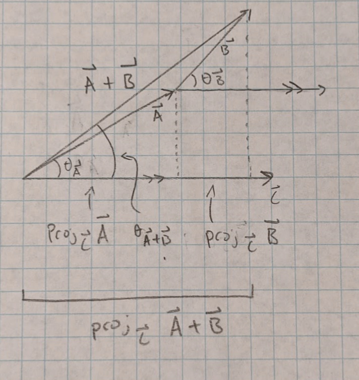

Backlinks
1 Problem 1:
1.1 1.1)

1.2 1.2)
\(comp_{\vec A}\vec B=|\vec B|\cos(\theta)=6\cos(\frac{2\pi}{3})=-3\) \(comp_{\vec B}\vec A=|\vec A|\cos(\theta)=2\cos(\frac{2\pi}{3})=-1\)
1.3 1.3)
\(\begin{equation*}\vec A\cdot \vec B\newline = |\vec A||\vec B|\cos(\theta)=6\cdot2\cdot(-0.5)\newline=-6\end{equation*}\)
2 Problem 2:
\(\begin{equation*} comp_{\vec A}\vec B= |\vec B|\cos(\theta)\newline = |\vec B|\cos(\theta)\times\frac{|\vec A|}{|\vec A|}\\ = \frac{|\vec A||\vec B|\cos(\theta)}{|\vec A|}\\ = \frac{\vec A\cdot \vec B}{|\vec A|} \end{equation*}\)
3 Problem 3:
The projection of \(\vec B\) onto \(\vec A\) would be the \(\vec A\) component of \(\vec B\) times the unit vector of \(\vec A\) to give the component a direction and make it a vector: \(\begin{equation*} \vec{proj}_{\vec A} \vec B=comp_{\vec A}\vec B\cdot\hat A\\ =|\vec B|\cos(\theta)\cdot\frac{\vec A}{|\vec A|}\\ =\frac{|\vec B|\cos(\theta)}{|\vec A|}\vec A \end{equation*}\)
4 Problem 4:
Because of vector addition we know that:
\[\vec A_{\perp\vec B}=\vec A-\vec A_{\parallel\vec B}\]
and thus:
\(\begin{equation*} =\vec A-|\vec A|\cos(\theta)\hat B\\ =\vec A-\frac{|\vec A|\cos(\theta)}{|\vec B|}\vec B\\ =\vec A-\frac{\vec A\cdot\vec B}{|\vec B|^2}\vec B \end{equation*}\)
We can check this by taking the dot product of the vector above and \(\vec B\). If the dot product equals zero then the two vectors apre perpendicular:
\[\vec B\cdot\vec A_{\perp\vec B}=\vec B\cdot(\vec A-\frac{\vec A\cdot\vec B}{|\vec B|^2}\vec B)\]
from problem 7 we know that the dot product is distributive, and thus:
\(\begin{equation*} =\vec A\cdot\vec B-\vec A\cdot\vec B\frac{1}{|\vec B|^2}\cdot\vec B\cdot\vec B\\ =\vec A\cdot\vec B-\vec A\cdot\vec B\frac{1}{|\vec B|^2}\cdot|\vec B||\vec B|\cos(0)\\ =\vec A\cdot\vec B-\vec A\cdot\vec B\frac{1}{|\vec B|^2}\cdot|\vec B|^2\\ =\vec A\cdot\vec B-\vec A\cdot\vec B\frac{|\vec B|^2}{|\vec B|^2}\\ =\vec A\cdot\vec B-\vec A\cdot\vec B\\ =0 \end{equation*}\)
5 Problem 5:
The dot product is defined as:
\[\vec A\cdot\vec B=|\vec A||\vec B|\cos(\theta)\]
is this case we can solve for theta:
\(\begin{equation*} \vec A\cdot\vec B=|\vec A||\vec B|\cos(\theta)\\ \Rightarrow\frac{\vec A\cdot\vec B}{|\vec A||\vec B|}=\cos(\theta)\\ \Rightarrow \theta = \cos^-(\frac{\vec A\cdot \vec B}{|\vec A||\vec B|}) \end{equation*}\)
because we do not know theta we can use another definition of the dot product to get the numorator of the fraction:
\(\Rightarrow \theta=\cos^-(\frac{A_xB_x+A_yB_y+A_zB_z}{|\vec A||\vec B|})\)
Therefore the angle between the two vectors \((-1,2,-2)\) and \((-3,1,2)\) is the following:
\(\begin{equation*}\theta =\cos^-( \frac{3+2-4}{\sqrt{1+4+4}\cdot\sqrt{9+1+4}})\\ \Rightarrow\theta =\cos^-( \frac{1}{3\sqrt{14}})\\ \Rightarrow\theta\approx1.48159 \end{equation*}\)
6 Problem 6:

Looking at the diagram above we see that:
\(\begin{equation*} proj_{\vec C}\vec A+proj_{\vec C}\vec B=proj{\vec C}(\vec A+\vec B)\\ \Rightarrow |\vec C|proj_{\vec C}\vec A+|\vec C|proj_{\vec C}\vec B=|\vec C|proj_{\vec C}(\vec A+\vec B)\\ \Rightarrow |\vec C||\vec A|\cos(\theta_{\vec A})+|\vec C||\vec B|\cos(\theta_{\vec B})=|\vec C||\vec A+\vec B|\cos(\theta_{\vec A+\vec B})\\ \Rightarrow \vec C\cdot \vec A+\vec C\cdot\vec B=\vec C\cdot(\vec A+\vec B) \end{equation*}\)
thus the dot product is distributive
this scales to the third dimention, because in a sense the diagram is the projection of 3D vectors onto a plane.
7 Problem 7:
\(\begin{equation*} \vec A \cdot\vec B = (A_x\hat i+A_y\hat j+A_z\hat k)\cdot(B_x\hat i+B_y\hat j+ B_z\hat k)\\ = A_x\hat i\cdot B_x\hat i+ A_x\hat i\cdot B_y\hat j+ A_x\hat i\cdot B_z\hat k+A_y\hat j\cdot B_x\hat i+ A_y\hat j\cdot B_y\hat j+A_y\hat j\cdot B_z\hat k+A_z\hat k\cdot B_x\hat i+ A_z\hat k\cdot B_y\hat j+A_z\hat k\cdot B_z\hat k \end{equation*}\)
the dot product between \(A_x\hat i\cdot B_x\hat i\) would be: \(|A_x||B_x|\cos(0)\), because the angle between \(\hat i\) and \(\hat i\) is \(0\) (they have the same direction), \(\cos(0)=1\), and thus the dot product equals \(A_xB_x\). However, the dot product between and two unit vectors that are not the same would yield a theta of \(\pi\over2\), which means \(\cos({\pi\over2}) = 0\) and thus that term would equal zero. This can be generalized as, if the two unit vectors are the same then it will yield a term equal to the product of their two coefficients, and if the two unit vectors are different, then the resulting term would be equal to zero. Therefore:
\(\begin{equation*}=A_xB_x+0+0+A_yB_y+0+0+A_zB_z+0+0\\ =A_xB_x+A_yB_y+A_zB_z\end{equation*}\)
8 Problem 8:
\[\{\vec r=\vec P_o+t(\vec v_o),t\in\mathbb{R}\}\]
this works because the \(\vec P_o\) term will position the vector so that the line passes through the point \(\vec P_o\), and then the \(t(\vec v_o)\) term will add and subtract and infinite amount of vectors in the direction and of the magnitude of \(t(\vec v_o)\) from \(\vec P_o\), thus creating a line that passes through \(\vec P_o\)
9 Problem 9:
This is pretty similar to problem 8, the only differenc is that the \(\vec P_o\) now equals one of the give vectors, and \(\vec v_o\) is the vector between the two points:
\(\begin{equation*} \{\vec r=\langle2,-5,-3\rangle+t\langle1,-9,-4\rangle,t\in\mathbb{R}\}=\{\vec r=\langle2,-5,-3\rangle+\langle t,-9t,-4t\rangle,t\in\mathbb{R}\}\\ = \{\vec r=\langle2+t,-5-9t,-3-4t\rangle,t\in\mathbb{R}\} \end{equation*}\)
10 Problem 10:
The law of cosines is as follows:
\[c^2=a^2+b^2-2ab\cos(\theta)\]
If the vectors \(\vec c, \vec a\) and \(\vec b\) are the legs of the triangle then \(c,a\) and \(b\) are the magnitudes of the vectors respectively, and \(\theta\) is the angle between vectors \(\vec a\) and \(\vec b\) tail to tail

looking at the image above we see that:
\(\begin{equation*}\vec c=\vec a-\vec b\\ \Rightarrow \langle c_x,c_y,c_z\rangle=\langle a_x,a_y,a_z\rangle-\langle b_x,b_y,b_z\rangle\\ \Rightarrow \langel c_x,c_y,c_z\ranle=\langle a_x-b_x,a_y-b_y,a_z-b_z\rangle \end{equation}\)
We also know that by the definition of a vector:
\[\vec a=\langle a_x,a_y,a_z\rangle\]
\[\vec b=\langle b_x,b_y,b_z\rangle\]
We can use these numbers and plug them into the the law of cosines:
\(\begin{equation*} c^2=a^2+b^2-2ab\cos(\theta)\\ \Rightarrow|\vec c|=|\vec a|^2+|\vec b|^2-2|\vec a||\vec b|\cos(\theta)\\ \Rightarrow c_x^2+c_y^2+c_z^2=a_x^2+a_y^2+a_z^2+b_x^2+b_y^2+b_z^2-2|\vec a||\vec b|\cos(\theta)\\ \Rightarrow (a_x-b_x)^2+(a_y-b_y)^2+(a_z-b_z)^2=a_x^2+a_y^2+a_z^2+b_x^2+b_y^2+b_z^2-2|\vec a||\vec b|\cos(\theta)\\ \Rightarrow a_x^2-2a_xb_x+bx^2+a_y^2-2a_yb_y+b_y^2+a_z^2+2a_zb_z+b_z^2=a_x^2+a_y^2+a_z^2+b_x^2+b_y^2+b_z^2-2|\vec a||\vec b|\cos(\theta)\\ \Rightarrow -2a_xb_x-2a_yb_y-2a_zb_z=-2|\vec a||\vec b|\cos(\theta)\\ \Rightarrow -2(a_xb_x+a_yb_y+a_zb_z)=-2|\vec a||\vec b|\cos(\theta)\\ \Rightarrow a_xb_x+a_yb_y+a_zb_z=|\vec a||\vec b|\cos(\theta) \end{equation*}\)